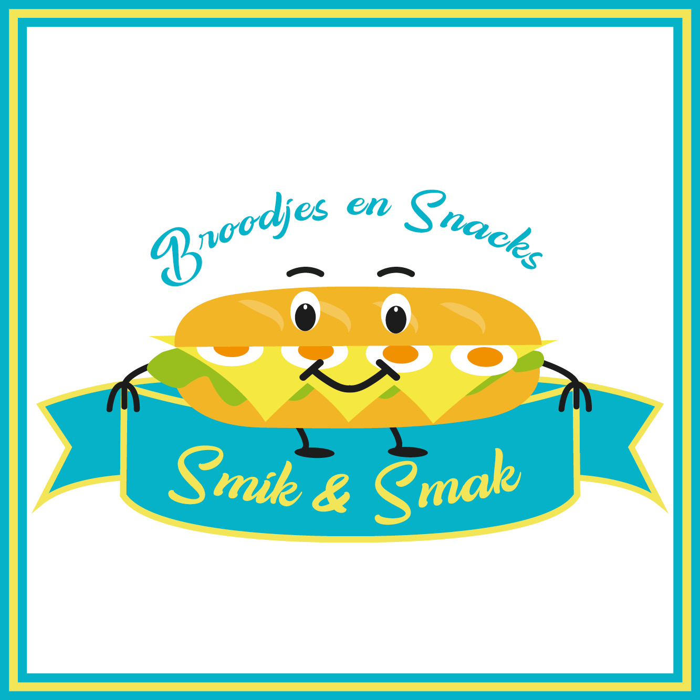
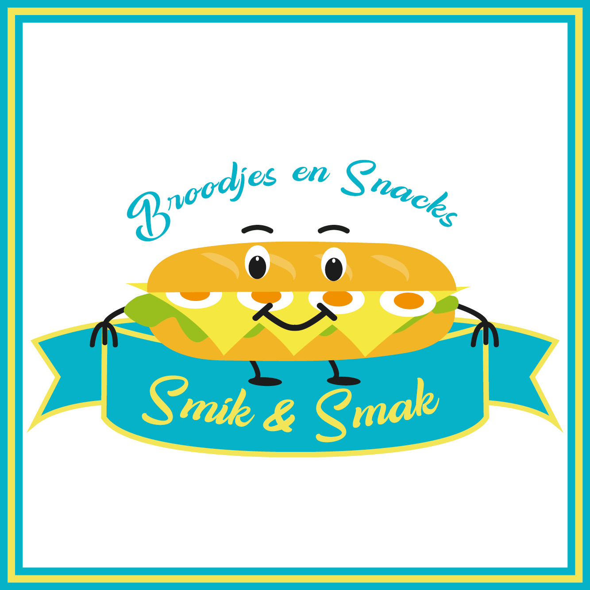
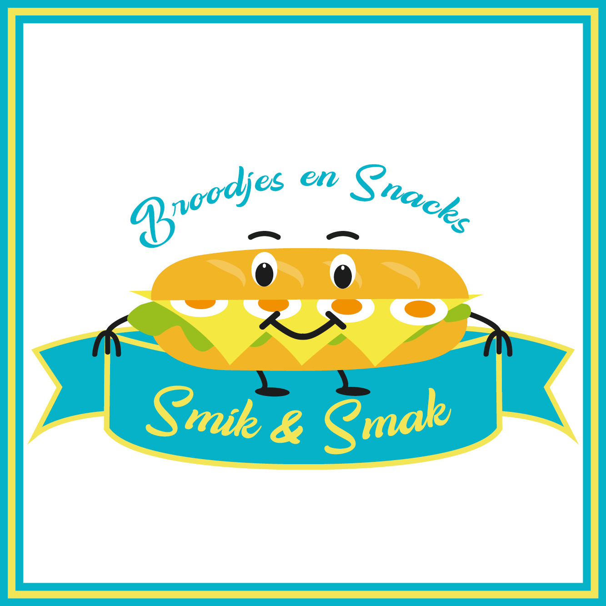

Mijn passie voor de creatieve wereld is begonnen van toen ik nog kind was. Ik wou altijd het fototoestel in men handen houden. 12 jaar later ben ik afgestudeerd op de middelbare school fotografie. Nu doe ik een batchelor grafische en digitale media omdat het creatieve en designen mij toch wel interesseert. Hieronder zie je enkele werkjes die ik doorheen men jaren heb gemaakt.
